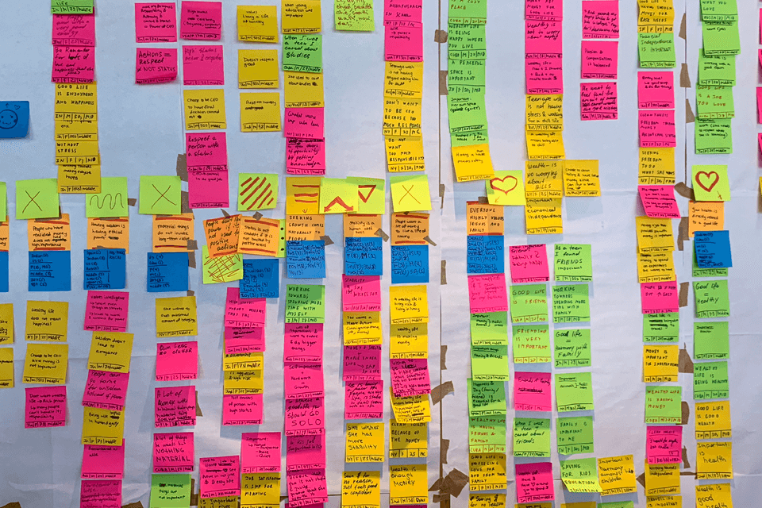

Web Development
Frontend - the heart and core of any website. Check out my experince and projects with it here

User Experience Design
What makes a user tick? This is how I create that special bond between your user and your product

Requirments Engineering
Take a look at my mapping of the systems; it's about the work behind the scene with complicated diagrams and moduels